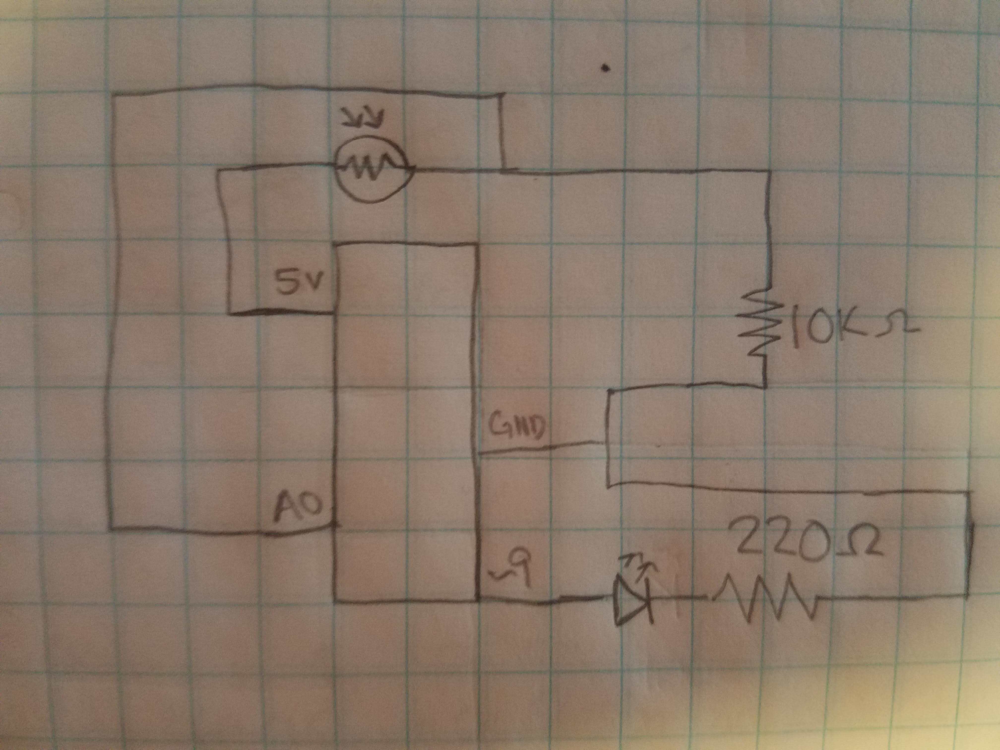
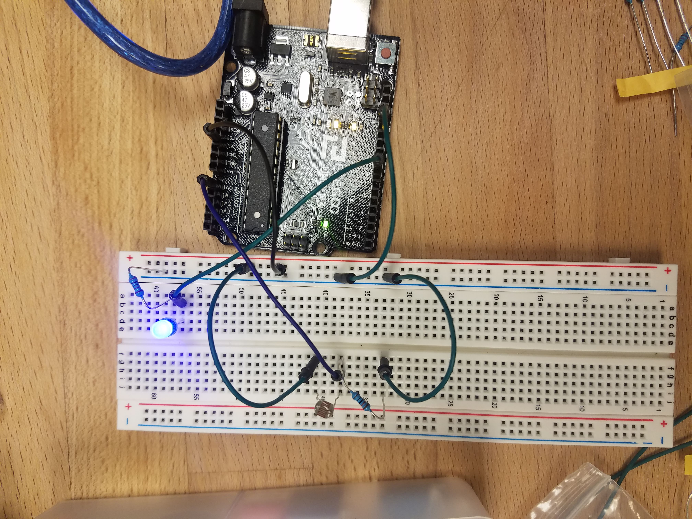

Sam's Assignment 3!
Schematic

This schematic shows the manner in which the resistors and LEDs were connected to the arduino and one another, as well as how the button was connected to a resistor and ground as well as pin 2 to sense its state. The resistors for the LEDs were 220 Ohm resistors because the arduino was putting out about 5V and each LED created a 1.8V drop for a total of 3.2V, with a desired current of 20mA 3.2V/0.02A=160 Ohms. The closest resistor to 160 I have without going under is 220. For the button resistor, it just needs to keep the current flowing from the 5V pin to ground when the button is pressed limited, so it can be quite large without inhibiting the operation of the circuit. Because of this I chose the 100K Ohm resistor.
Circuit

This circuit has two main parts: the LEDs and the button. The LEDs are connected to pins on the board that supply power, there are resistors between the pins and LEDs to keep the current under what the LEDs can handle. Each of these LEDs connects to the same ground. The button part of the circuit uses the 5V pin to connect to the button and then through a resistor and to the same ground as the LEDs. Between the button and resistor is a connection to pin 2 which is configured as an input and senses when there are electrons flowing through the button circuit to see if the button is pressed.
Code Snippet
The following code keeps the LEDs fading in and out unless the button is held in which case they stay glowing bright until it is released.
// set name for pin 2 to buttonPin
const int buttonPin = 2;
// set initial button state to 0
int buttonState = 0;
// set starting brightness of LED to 0
int brightness = 0;
// set amount for LED brightness to fade
int fadeAmount = 5;
// initialize putput and input pins
void setup() {
// goes through pins 2-11 one at a time
for (int thisPin = 2; thisPin < 12; thisPin++) {
// initializes each as an output
pinMode(thisPin, OUTPUT);
}
// initialize pin 2 that senses the button as an input
pinMode(buttonPin, INPUT);
}
//this code repeats as long as the arduino is powered
void loop() {
// read the state of the pushbutton value
buttonState = digitalRead(buttonPin);
//check if button is pressed and if so execute
if (buttonState == HIGH) {
// goes throgh pins 9-11
for (int thisPin = 9; thisPin < 12; thisPin++){
//sets each pin to on and bright
digitalWrite(thisPin, HIGH);}
//if the button is not pressed
}else {
// for each pin 9-11
for (int thisPin = 9; thisPin < 12; thisPin++) {
// set the brightness to 0
analogWrite(thisPin, brightness);
// change the brightness by -5 for next time through the loop
brightness = brightness + fadeAmount;
// check if at end of a fade or bright cycle
if (brightness <= 0 || brightness >= 255) {
//reverse cycle
fadeAmount = -fadeAmount;
}
// wait for 30 milliseconds to see the dimming effect
delay(30);
}
}
}
Circuit Operation